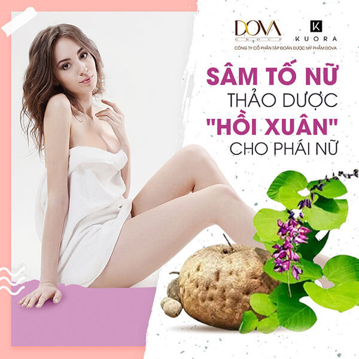
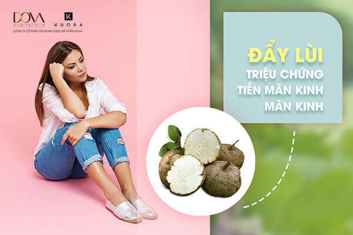
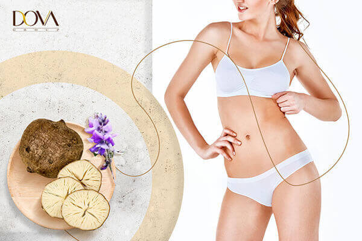
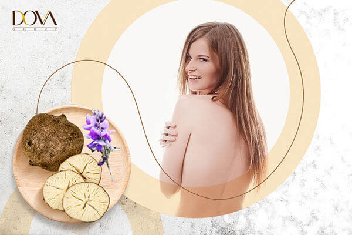
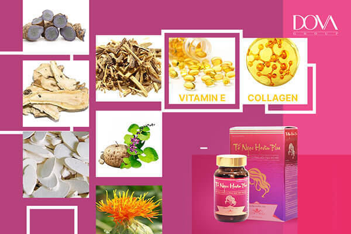

Được mệnh danh là “thần dược” kéo dài tuổi thanh xuân cho phụ nữ. Tuy nhiên, một số người vẫn mơ hồ chưa biết sâm tố nữ là gì hay sâm tố nữ có tác dụng gì mà tạo nên sức hút và được đánh giá cao đến vậy. Với 9 tác dụng (công dụng) của sâm tố nữ đã được khoa học chứng minh và được chuyên trang Tố Ngọc Hoàn Plus bật mí trong nội dung bài viết hôm nay, chắc chắn sẽ đem đến lời giải đáp chính xác nhất cho quý khách.
Nội dung bài viết
Trước khi đi vào phân tích tác dụng của sâm tố nữ đối với nhan sắc, sức khỏe và chức năng sinh lý nữ, Dova Group xin được làm rõ khái niệm sâm tố nữ là gì nhằm giúp quý khách nắm được thông tin cơ bản về loài thảo dược quý này.

Theo giới Đông y, sâm tố nữ còn được biết đến với tên gọi là sắn dây củ tròn, tên khoa học là Pueraria mirifica, có nguồn gốc từ Myanmar và Thái Lan. Đặc biệt tại Thái Lan, sâm tố nữ được xem như “bí thuật cải lão hoàn đồng” được lưu truyền suốt 800 năm qua của phụ nữ nơi đây.
Thông qua nhiều công trình nghiên cứu từ năm 2000, các nhà khoa học tại Thái Lan, Anh Quốc, Nhật Bản đã chứng minh trong rễ của sâm tố nữ có tới 17 loại phytoestrogen và thảo dược này cũng là nguồn estrogen dồi dào nhất trong số các estrogen từ thực vật.
Nếu như những thông tin ở trên, Tập đoàn Dova đã giúp quý khách hiểu rõ Sâm tố nữ là gì thì trong nội dung của phần này, chúng tôi sẽ tiếp tục phân tích về công dụng của sâm tố nữ để xóa bỏ nỗi băn khoăn vì không biết sâm tố nữ có tốt không của những người đang có ý định sử dụng.
Với câu hỏi “sâm tố nữ có tác dụng gì?”, dưới đây là những thông tin đã được giới khoa học ở nhiều quốc gia chứng minh:
Đẩy lùi các triệu chứng tiền mãn kinh là lời giải đáp đầu tiên dành cho những chị em đang thắc mắc sâm tố nữ có công dụng gì? Bởi vì, Estrogen là hormone steroid đóng vai trò kích thích sự phát triển tính dục ở cơ thể phụ nữ. Với phụ nữ bước vào độ tuổi tiền mãn kinh, hoạt động sản sinh estrogen ở buồng trứng suy giảm, kèm theo đó là các triệu chứng lão hóa, yếu sinh lý…

Sâm tố nữ có chứa 17 loại phytoestrogen. Đây là các hợp chất thực vật có cơ chế sao chép hành vi của estrogen nội sinh. Khi được đưa vào cơ thể, phytoestrogen này sẽ bù đắp lượng estrogen thiếu hụt. Giúp cải thiện các triệu chứng của tuổi tiền mãn kinh như: lão hóa, sạm nám da, thoái hóa đốt sống, suy giảm chức năng sinh lý...
Nếu bạn hỏi chúng tôi rằng, sâm tố nữ có tốt không? Chúng tôi sẽ không ngần ngại trả lời là có. Vào năm 2007, một nghiên cứu tại trường đại học Mahidol, Bangkok, Thái Lan đã tiến hành nghiên cứu lâm sàng và cho kết quả:
Vì trong sâm tố nữ có chứa phytoestrogen với chức năng tương tự như estrogen, giúp kích thích âm đạo tiết dịch, hỗ trợ làm giảm triệu chứng khô rát âm đạo và các bệnh phụ khoa.
Đây cũng hợp chất đặc biệt tốt cho phụ nữ sau sinh. Phytoestrogen kích thích sản sinh Collagen giúp phục hồi các mô tổn thương trước đó trong quá trình thai kỳ và sinh nở.
Isoflavone chứa estrogen thảo dược giúp phát triển ống sữa ở vú và mở rộng mô mỡ, tăng dây chằng xung quanh vú để định hình khuôn ngực. Các ống chia nhánh từ núm vú vào bên trong vú, kết thúc bằng cụm các tiểu thùy, làm cho ngực trở nên săn chắc hơn.

Không chỉ có công dụng với sức khỏe âm đạo, uống sâm tố nữ đúng cách còn giúp bạn có hệ xương khớp khỏe mạnh. Lý do, nếu cơ thể thiếu hụt estrogen sẽ thúc đẩy quá trình sản sinh interleukin-6 và interleukin-1 (các cyntokin kích thích tế bào hủy xương). Dẫn đến tình trạng mất xương, loãng xương ở phụ nữ trung niên và cao tuổi xảy ra nhanh hơn .
Phytoestrogen trong sâm tố nữ có tác dụng như estrogen, ức chế quá trình hình thành các cytokine, giúp phòng chống các bệnh thoái hóa đốt sống, bổ sung các tế bào và kéo dài tuổi thọ của xương. Đồng thời estrogen cũng làm tăng hoạt tính của tế bào tạo xương, giúp hấp thu canxi ở ruột tốt hơn.
Sử dụng sâm tố nữ, là một biện pháp giúp phòng ngừa và hỗ trợ điều trị các vấn đề về xương tốt nhất. Giảm các triệu chứng đau nhức hay thoái hóa ở độ tuổi mãn kinh cũng giảm thiểu rõ rệt.
Sâm tố nữ có tác dụng gì? Phải nhấn mạnh rằng, công dụng phòng chống các tế bào ung thư của sâm tố nữ chính là một trong những tác dụng tuyệt vời nhất. Lý giải cho lợi ích này của sâm tố nữ, các nhà khoa học đã chứng mình 10 hoạt chất isoflavonoid bao gồm daidzein, genistein, kwakfurin, daidzin, genistin, and puerarin .... có khả năng ức sự phát triển các tế bào ung thư.
Theo thí nghiệm của Waranya Chatuphonprasert vào năm 2012 ở cơ thể người phụ nữ đã cắt bỏ buồng trứng, kết quả cho thấy sử dụng dịch chiết từ Sâm tố nữ đã tác động trực tiếp làm tăng nồng độ chất glutathione (GSH) và tỉ lệ GSH/GSSH - hợp chất chống oxy hóa ở gan và tử cung.
Khi cơ thể khỏe mạnh Các hợp chất estrogen nguồn gốc từ thực vật đóng vai trò làm tăng cường và cải thiện chức năng của các chất chống oxy hóa. Vì thế, sâm tố nữ giúp làm giảm tốc độ oxy hóa của cơ thể tương đối tốt.

Khi nói về những công dụng của sâm tố nữ, không thể không kể đến vai trò quan trọng trong việc thúc đẩy hoạt động tuần hoàn của tim. Cụ thể, sự suy giảm estrogen kích thích phát triển các cholesterol xấu bám vào thành mạch gây tắc nghẽn mạch máu. Lúc này, việc bổ sung phytoestrogen thay thế sẽ giúp cơ thể cân bằng quá trình sản sinh các tế bào cholesterol nói chung, đồng thời giảm thiểu đáng kể các tế bào xấu hình thành.
Khi estrogen tiết ra từ buồng trứng không đủ để đáp ứng nhu cầu của cơ thể, khiến các tín hiệu từ bộ não truyền đến buồng trứng bị sai lệch, gây ra các thiệt hại đối với hệ thần kinh và não. Chính vì vậy, khi bổ sung hợp chất thiên nhiên tương tự estrogen trong sâm tố nữ, điều này giúp duy trì tốt hoạt động hệ thần kinh.
Năm 2015, nhà khoa học Thái Lan và các cộng sự đã nghiên cứu và chứng minh dịch chiết từ sâm tố nữ có thể làm đẹp da, ngăn chặn quá trình lão hóa và khi sử dụng bổ sung với các sản phẩm chống nếp nhăn, sẽ không gây ra các phản ứng phụ có hại cho sức khỏe.
Sâm tố nữ làm đẹp da bằng cơ chế bổ sung estrogen kích thích sản sinh collagen. Đồng thời ức chế sự tích tụ của các tế bào sắc tố melanin gây nám sạm, giúp da căng sáng.
Với 8 lợi ích nổi trội của sâm tố nữ trên đây, quý khách đã biết được sâm tố nữ có tác dụng - công dụng gì, cũng như tự đưa ra được câu trả lời sâm tố nữ có tốt không rồi phải không nào? Nhờ sở hữu những tác dụng tuyệt vời này, loại thảo dược quý này đã và đang được ứng dụng rộng rãi trong ngành công nghệ làm đẹp từ thiên nhiên. Tuy nhiên, không phải nguồn sâm tố nữ nào cũng đảm bảo an toàn và đem lại hiệu quả cao, quý khách nên tìm hiểu kỹ lưỡng và chỉ nên mua các sản phẩm có thành phần sâm tố nữ từ những đơn vị sản xuất, phân phối uy tín.

Vào ngày 8/10/2019, tập đoàn DOVA GROUP cho ra mắt sản phẩm Tố Ngọc Hoàn Plus, hỗ trợ tăng cường nội tiết tố nữ. Trong đó Sâm Tố Nữ là thành phần quan trọng nhất với hàm lượng 300mg chiếm hơn ⅔ tổng hàm lượng/viên nén (500 mg).
Với quy trình sản xuất khép kín và tỉ mỉ từ công đoạn nuôi trồng, nguồn Sâm tố nữ của tập đoàn Dova được chăm sóc trong môi trường sạch có nhiệt độ ổn định, khu trồng dược liệu đạt tiêu chuẩn được cấp phép bởi Bộ Y Tế nhằm đảm bảo duy trì chất lượng Sâm tố nữ đạt chuẩn GMP.
Qua công đoạn thu hoạch, Sâm tố nữ sẽ đến tay đội ngũ nhân viên giàu kinh nghiệm. Sau đó, qua sàng lọc và sơ chế, chúng tôi sẽ chọn ra những củ sâm đạt chất lượng tốt nhất. Cuối cùng là công đoạn quan trọng nhất, Sâm Tố Nữ sẽ được đưa vào chiết tách, quá trình này giúp sâm tố nữ giữ được nhiều chất dinh dưỡng tốt và hỗ trợ khách hàng dễ dàng hơn trong việc sử dụng.
Ngày nay, Sâm Tố Nữ đã trở thành nguyên liệu thiên nhiên vàng trong các sản phẩm giúp cân bằng, bổ sung nội tiết tố. Là một trong những đơn vị thu mua Sâm tố nữ lớn nhất Việt Nam với quy trình chế biến đạt tiêu chuẩn GMP, chúng tôi tự hào khi sản phẩm Tố Ngọc Hoàn Plus đang dần trở thành người bạn đồng hành không thể thiếu hành trình chăm sóc sức khỏe, nhan sắc và khả năng sinh lý của chị em phụ nữ.
Hy vọng rằng, bài viết với chủ đề “Sâm tố nữ là gì, có tác dụng gì? - 8 công dụng được chuyên gia hé lộ” đã đem đến những thông tin hữu ích cho quý khách. Nếu quý khách khách muốn sử dụng sâm tố nữ cao cấp để chăm sóc sức khỏe và sắc đẹp, xin vui lòng liên hệ đến số HOTLINE: 0932.533.999 để được tư vấn hỗ trợ 24/7.

BÀI VIẾT NỔI BẬT

Nội tiết tố nữ là loại hormone phổ biến trong…
Nội tiết tố nữ là loại hormone phổ biến trong…
Nội tiết tố nữ là loại hormone phổ biến trong…
Nội tiết tố nữ là loại hormone phổ biến trong…